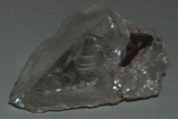

|

| (Mn,Fe)(Nb,Ta)2O6
This sample of manganocolumbite is displayed in the Smithsonian Museum of Natural History. Manganocolumbite is a oxide mineral of manganese, niobium, tantalum and iron with the composition (Mn,Fe)(Nb,Ta)2O6. The sample at left is about 6 cm across and is from Gilgit, Northern Areas, Pakistan. The sample is described as manganocolumbite with quartz.
|